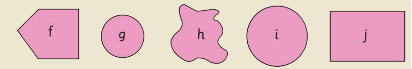
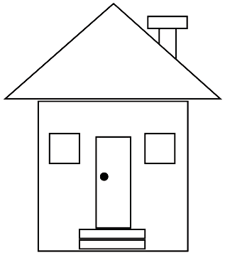

(a) Draw all the figures with four sides.
(b) How many figures are triangles?
(c) Write down the letters labelled in the circles.
(d) Make the figures identified with letters labelled a, b, d, e, and f by cutting a piece of paper or manila card.
2. The following diagram shows a house made of plane figures. Draw all the plane figures found in the diagram:

Activity 7:Recognising plane figures by using ICT
Use online programmes to identify different types of plane figures and match them with real objects.